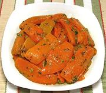

|
Picante Bell PeppersItaly - Peperoni Piccante | ||||
| Serves: Effort: Sched: DoAhead: |
6 app ** 2-1/2 hrs Days |
"Picante" does not mean chili hot for this dish, though there is a little Tobasco Sauce, it means having a slightly tart pickle flavor from the capers, anchovies and mustard. | |||
|
|
2 ----- 1/4 1 1/3 4 ----- 1 1/4 tt 1/4 5 ----- |
# --- c cl c --- T t t T --- |
Bell Peppers (1) -- Caper mix Parsley Garlic, small Capers Anchovies (2) -- Dressing Mustard Worcestershire Tabasco Sauce Salt Olive Oil ExtV ---------- |
Make - (2-1/2 hrs - 20 min work)
|